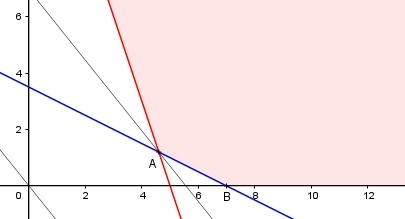

Aufgabe 92 Ein Mensch braucht wöchentlich mindestens 70 mg Vitamin H und 150 mg Vitamin B. Es gibt Tabletten der Sorte A mit 10 mg H und 30 mg B pro Gramm und die Sorte B mit 20 mg H und 10 mg B pro Gramm. Die Sorte A kostet 0,50 € pro g und die Sorte B 0,4 € pro g. Wieviel g von jeder Sorte muss er in einer Woche einnehmen, um zu möglichst geringen Kosten K seinen Bedarf zu decken? Bedingungen: x = g der Sorte A y = g der Sorte B 10x + 20y ≥ 70 30x + 10y ≥ 150 x > 0 x ∈ ℝ y > 0 y ∈ ℝ Zielfunktion: K = 0,5x + 0,4y Randgerade 1: 10x + 20y = 70 Randgerade 2: 30x + 10y = 150

Das Planungsgebiet liegt rechts und oberhalb der Strecke AB und erfüllt alle Ungleichungen. Eckpunkt A ist der Schnittpunkt der Randgeraden 1 und 2: 10x + 20y = 70 (1) 30x + 10y = 150 (2) (1) * (-3) + (2) -30x - 60y = -210 30x + 10y = 150 ------------------ -50y = -60 |:(-50) y = 1,2 Eingesetzt in (1): 10x + 20 * 1,2 = 70 |-24 10x = 46 |:10 x = 4,6 A(4,6|1,2) Die Parallele zur Zielfunktion durch A liegt am tiefsten --> Er muss 4,6 g der Sorte A und 1,2 g der Sorte B einnehmen, dann ist sein Bedarf gedeckt, und die Kosten K sind minimal. Kmin = 0,5 * 4,6 + 0,4 * 1,2 = 2,72 €